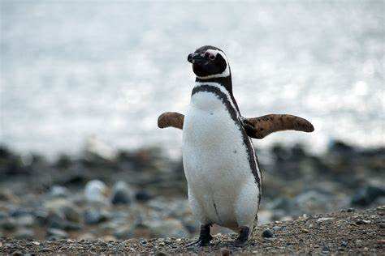
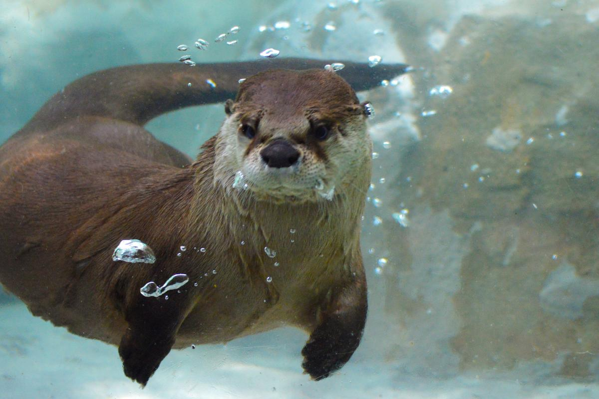
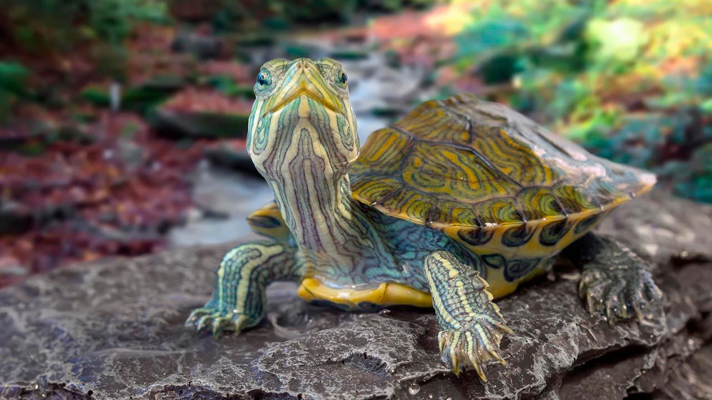

En esta zona podras conocer una variedad de animales de la sabana entre ellos los que se muestran a continuacion
Pingüinos
Los pingüinos son aves acuáticas que no pueden volar, pero son excelentes nadadores. Habitan en regiones frías, como la Antártida, aunque algunas especies se encuentran en climas más cálidos. Son conocidos por su marcha característica y su capacidad para adaptarse a condiciones extremas.
Nutrias
Las nutrias son mamíferos acuáticos que viven en ríos, lagos y costas. Son juguetonas, inteligentes y utilizan herramientas para romper alimentos. Con su espeso pelaje, se mantienen calientes mientras nadan, y son muy sociables, a menudo se agrupan en familias.
Tortugas
Las tortugas son reptiles de vida larga que pueden vivir tanto en agua como en tierra. Son famosas por su caparazón, que las protege de los depredadores. Algunas especies marinas migran miles de kilómetros, y muchas tortugas terrestres viven en hábitats secos o boscosos.